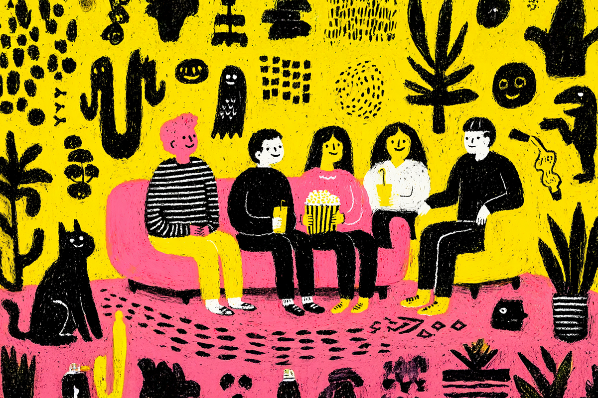
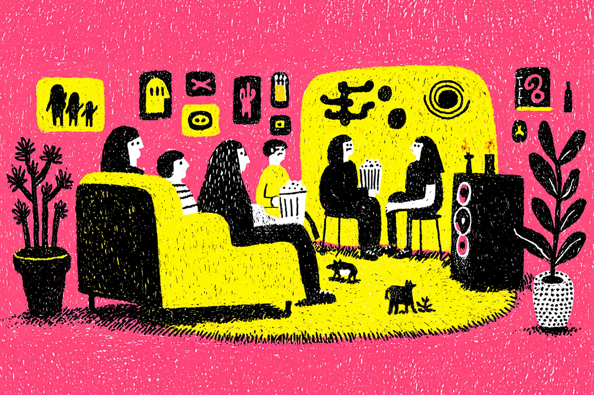
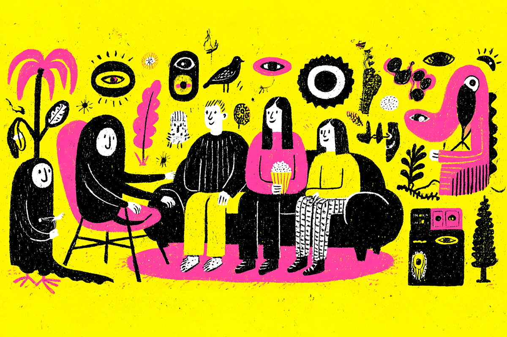

¡Prepara las cabritas!
Conoce los documentales más esperados del 2025
Conoce los documentales más esperados del 2025

No somos pocos los que disfrutamos de un buen documental en la comodidad de nuestros hogares, pero cuánto mejor si estos proyectos tratan sobre nuestros artistas favoritos.
Este año se liberaron varios documentales sobre músicos para todos los gustos. No obstante, ya estamos pasando la mitad de este año y aún queda mucho por estrenar.
Es por ello que a continuación te mostramos una lista con algunos de los documentales musicales más esperados en lo que queda del año, para que los agendes y prepares a full tus emociones porque muchos de estos trabajos serán transmitidos por streaming.
Sin ir más lejos, ¡acá vamos!

Este documental transmitido en dos partes por HBO y HBO Max ya está al aire hace unas semanas, pero no podíamos dejarlo de mencionar considerando la magnitud del artista que lo protagoniza.
“And So It Goes” cuenta la historia y trayectoria de Billy Joel, uno de los músicos más prolíficos del siglo XX.
Desde sus inicios en la música clásica hasta transformarse en una leyenda del pop rock, esta historia está contada a través de su discografía y contiene un montón de contenido exclusivo.
Si tienes cinco horitas disponibles (para eso están las dos partes de todas maneras), te recomiendo encarecidamente darle una vuelta a este tremendo documental.
Hablando de clásicos, y siguiendo la senda que nos dejó la publicación pasada que puedes leer acá (adjuntar link), tenemos un nuevo documental sobre la banda insigne de Manchester.
Oasis está armando un documental sobre su nueva gira, la que los llevará a recorrer todo el mundo tras años de ausencia de los escenarios. Todo indica que se están recolectando testimonios de diferentes fans que puedan contar cómo la banda ha cambiado sus vidas.
Dirigido por Dylan Southern y Will Lovelace y producido por Steven Knight, creador de la popular serie Peaky Blinders, este proyecto aún no tiene fecha de estreno, pero se prevé que sea a finales de este año o ya para el 2026.

Este es otro documental recientemente estrenado por Netflix. La Salsa Vive es un trabajo que recorre la historia de este género musical a través de distintos testimonios, su recorrido por los países donde la salsa fue y es un boom y también se concentra en los testimonios de los músicos y fans involucrados en su relevancia a nivel cultural e identitario.
Hay un especial énfasis en cómo la salsa llegó a Colombia, especialmente en Cali, “el país que más ama a la salsa en la Tierra”, ya que la producción de este documental viene de ese país.
Esta propuesta no es solo un show: es una invitación a redescubrir la salsa como parte viva del patrimonio cultural. Cruza música, historia y barrio, todo bajo el mismo prisma, con la idea de conectar a nuevas generaciones con un legado que sigue sonando fuerte, pese al paso del tiempo.
Un documental que recorre la trayectoria e historia de la popular boy band inglesa furor de los años 80’s, Take That.
Netflix vuelve a ser la encargada de transmitir este nuevo trabajo, el que todavía no tiene fecha de estreno, pero que sí o sí se lanza durante este año. La serie promete una mirada desde dentro a la banda, con acceso a Gary, Howard y Mark, en entrevistas con Jason y Robbie.
Para los que desconocen a este grupo, fue el primer proyecto y el que le dio reconocimiento internacional a Robbie Williams antes de lanzarse con su trabajo en solitario. Ojo que este documental sigue el exitoso lanzamiento del documental del mismo Robbie, también estrenado por la plataforma Netflix.
Aún no hay un tráiler disponible para este trabajo.

Uno de los documentales esperados del año. Por fin se realizó un documental de una de las voces más increíbles y reconocidas de los 90’s y también que pueda retratar en formato audiovisual una de las historias más trágicas de la música.
Este trabajo, dirigido por la documentalista Amy Berg, nos muestra algunos de los momentos más importantes en la vida del cantante a más de 25 años de su muerte.
Buckley, adorado por artistas como Matt Bellamy de Muse, Robert Plant, Paul McCartney y Thom Yorke de Radiohead, se caracterizó no solo por sus tremendos dotes de guitarristas o su virtuosismo al momento de cantar, sino que también por sus sentidas interpretaciones y sensibles letras.
Su álbum “Grace” debe ser una de las piezas artísticas más memorables y distinguibles en la historia de la música y es por lo mismo que los melómenos no han mostrado menor interés por este nuevo documental. Contará con material inédito, además de los testimonios de sus cercanos, de los músicos de su banda, admiradores y de su madre, quien además facilitó algunas imágenes nunca antes vistas de Jeff.
Este documental se estrenará en los cines el próximo 8 de agosto para después encontrarse en la plataforma de streaming HBO Max durante el verano.
Hay muchos otros documentales que están disponibles en diferentes plataformas y que se han estrenado con éxito durante este año, entre ellas destacamos “Metallica Saved My Life"”, “Sly Lives!” (sobre el legado de Sly & Family Stone), "One To One: John & Yoko" y "Karol G: Mañana fue muy Bonito".
¿Qué documental esperas con más ansias?
 Cultura
CulturaSé que suena raro hablar de calor extremo mientras en Chile todos están buscando la parka más gruesa del clóset.
 Cultura
CulturaEl hecho de que estemos entrando al mes de julio no se puede creer. Pero lo que tampoco se puede creer es la cantidad de artistas que han…
 Cultura
CulturaCuando hablamos de trabajos clásicos de la música chilena, siempre se nombran los discos de Violeta Parra, Víctor Jara, Los Jaivas o…